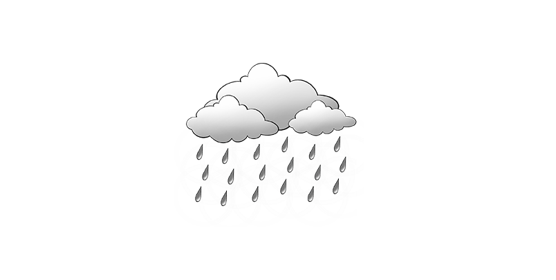

الصخور الرسوبية
الصخور الميكانيكيه
الصخور الكيميائية
الصخور العضوية
Your browser does not support the video tag.
تشغيل/إيقاف الفيديو
تجوية الميكانيكيه
رياح
امطار
Your browser does not support the video tag.
تجوية كيميائية
Your browser does not support the video tag.
تجوية عضوية
Your browser does not support the video tag.

Explain / شرح
البريشيا
الكونجلوميرات
الصواعد والهوابط
المتبخرات
الاحجار السيلسية
الصخور الكربوناتية
الصخور الرسوبية العضوية
Your browser does not support the video tag.
Your browser does not support the video tag.
Your browser does not support the video tag.
Your browser does not support the video tag.
Your browser does not support the video tag.
Your browser does not support the video tag.
Your browser does not support the video tag.
Your browser does not support the video tag.